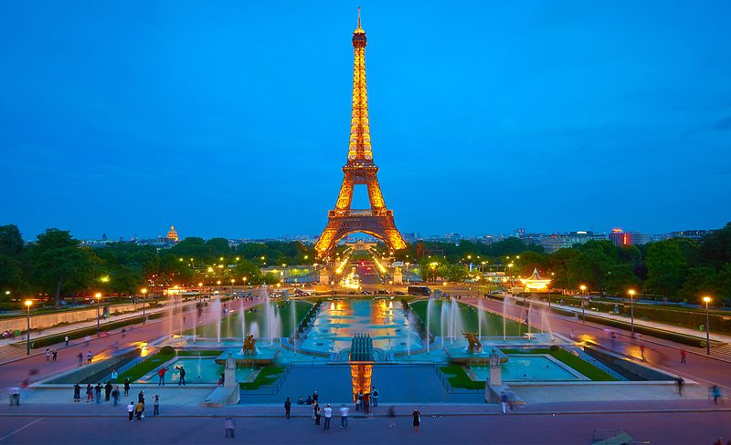

Paris
Paris, France
- Getting here
- QR39 Doha → Paris CDG, lands 13:15, then immigration (EES queues) and a taxi (flat fare about €65) or RER B into town, about 45 minutesThe flight is booked for all four; the cost shown is only the airport transfer. Hotel check-in is usually from 15:00, so ask to leave bags.
- Do
- 1 h · FreeExposure · High
- 1 h · $52Exposure · Medium-high
- 1 h · FreeExposure · Medium
- 2.5 h · $149Exposure · Low
- 1 h · $87Exposure · Low
- Thu 10 Dec: land 13:15, check in, then the Champs-Élysées lights walk up to the Arc rooftop in the evening (284 stairs: the lift is out of service)
- Fri 11 Dec: Notre-Dame in the morning (book the free slot that morning), Eiffel summit in the afternoon, Seine cruise at dusk
- Jet lag: kids will wake very early for a few days, so keep evenings short
- Check the news and the préfecture de police notices each morning; the Champs-Élysées is the first thing to drop
- Stay
- Family room or apartment, ideally near the Eiffel Tower / 7th2 nights × ~$360 = ~$720 likely · $220–$480 per night (researched rates) · Not bookedPrepaid (non-refundable) rate on every night except the last; book the last night here on a free-cancellation rate. Here that means night 1 (10 Dec) prepaid, night 2 (11 Dec) flexible.
Shortlist (per night, family of four)
- Hôtel Muguet ~$420/night7th, near Invalides and the Eiffel Tower · Connecting family room, 27 m², two bathroomsParking: No car in ParisQuiet street, small hotel; best location for the Eiffel day (estimate, re-quote on the hotel site).
- Kopster Hotel Paris Porte de Versailles ~$367/night15th, metro · rated 8.7 (2,243 reviews) · Suite: bedroom + living room with sofa bed, 1 bathroomParking: On-site parking (Booking filter); no car neededKids stay free; free cancellation on the listed rate.
- Novotel Paris 17 ~$276/night17th · rated 8.0 (1,861 reviews) · Superior queen room with double sofa bedParking: On-site parking (Booking filter); no car neededBoth kids stay free; pay at the property.
- sur les toits de Paris ~$223/night14th, metro · rated 9.0 (5 reviews) · 3-bedroom apartment, 1 bathroom, kitchenParking: On-site parking (Booking filter); no car neededCheapest and roomiest, but only 5 reviews: check recent bathroom photos.
Booking.com search 20–21 Oct 2026: 2 adults + 2 kids, rated 8+, family rooms, parking, sorted by price. Before paying, check the cleanliness sub-score (aim 9+) and recent bathroom photos.
Earlier Paris shortlist (18 Oct, near the Seine and the 7th; estimates)
- Citadines Saint-Germain-des-Prés $320–520, likely $4006th, Seine quay · 1-bedroom apartment, 42 m², double bed plus sofa bed, kitchenetteSelf-catering suits the kids; weekly housekeeping only. Near the Seine and Notre-Dame.
- Hôtel Muguet $330–540, likely $4207th, near Invalides and the Eiffel Tower · Connecting family room, 27 m², two bathroomsQuiet street, small hotel. Best location for the Eiffel day.
- Hôtel Belloy Saint-Germain $380–620, likely $4806th, near Luxembourg and Odéon · Family connecting rooms, 26 m², two bathroomsShort walk to the Luxembourg boats (Paris return).
- Hôtel Odéon Saint-Germain $400–650, likely $5006th, Odéon · Family rooms 35 m², up to six, two bathroomsThe most room for the money in the 6th; highest price.
- Adagio Paris Centre Tour Eiffel (Accor) $320–560, likely $42015th, 14 rue du Théâtre (not the 7th) · 2-bedroom apartment, 75 m², up to sixThe only Accor family option near the Eiffel Tower, but reviews raise cleanliness concerns, which matter to you. Flexible Accor rates usually cancel until the night before arrival for stays of 1–7 nights; check.
Do not book near République, Magenta, Gare de l'Est, Bastille or Nation (17 Oct march axis).
- Nights
- Cost
- Hours
- Risks
- Unrest · Medium and rising
About 110,000 marched in Paris on 17 Oct (prefecture figure), 855 arrests, with looting around République, Magenta and Madeleine.
→ Stay away from République, Bastille, Nation and the Champs-Élysées on march days. The Champs-Élysées lights and the Arc are the first to drop; see the exposure ranking below.
Security · Medium-highVigipirate at the middle level, with Christmas sites named as a focus.
→ Expect bag checks; avoid dense late-night crowds.
Protest exposure of this stop's sights
Based on the 17 Oct 2026 events and the banned zones that day (Champs-Élysées, Concorde, Châtelet–Les Halles, the Palais de Justice area). Marches usually run République, Bastille, Nation, and the damage was around République, Boulevard de Magenta, Sébastopol, Madeleine and Faubourg-Saint-Honoré. Ranked highest first; "Planned" follows the current plan. My judgement from news reports, not an official map. Check the news and préfecture de police notices each morning. Weekdays are not automatically safe: 13 Oct (a Tuesday) also had serious incidents.
- To verify
- Low Arc de Triomphe lift out of service: 284 stairs each wayNoted in the plan; check lift status on the day
- Low Notre-Dame free slots open on the day onlyBook on notredamedeparis.fr on the morning of 11 Dec
- Low Hotel check-in usually 15:00; QR39 lands 13:15Ask to leave bags; not booked
⚑ Not booked. Eiffel summit slots for 11 Dec go fast once released.